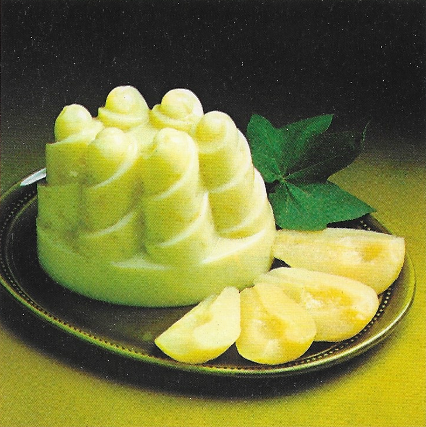

JELLY A LA DUCHESSE

Experience a delightful pear-filled treat with our refreshing gelatin mold.
Finely chopped pears mingle with lime-flavored gelatin, creating a subtly
sweet and tangy combination.
INGREDIENTS
- 1 envelope of lime flavored gelatin
- 1 can of halved pears
- 1½ cups of water
- 1 cup cold milk
STEPS
- Open a medium can halved pears, strain the syrup into a measure
- Put 4 pear halves on one side to serve with the mold, chop the rest of
the pears finely
- Add water to the pear syrup to give 1 ½ cups
- Dissolve the lime-flavored gelatin in this liquid, allow to cool and
begin to stiffen
- Stir in the chopped pears
- Make up a whipped topping mix with cold milk, fold the gelatin mixture
into this
- Spoon into a 1-quart mold. allow to set
- Turn out and serve with pear halves